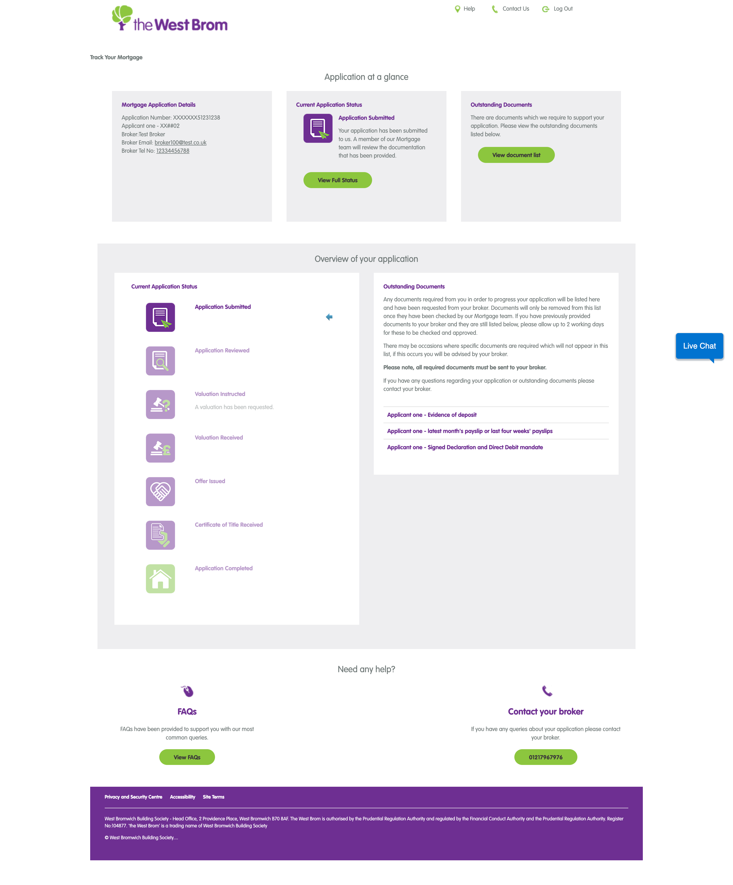
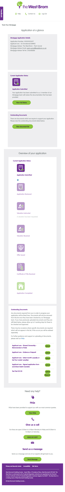
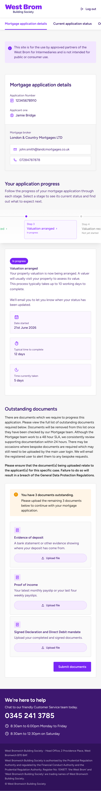

Adam Goode.
I design things for screens, paper and the people on the other side of them.
Hello, I'm Adam.
I've been designing for over 14 years, working across print, websites and digital products.
I like the visual side of design. The details, the type, the bits that make something feel right. But I also like working out why something isn't working, and making it simpler.
These days, I work on digital experiences at the West Brom Building Society. Before that, I worked at Clevercherry as Head of Design, designing a bit of everything.
A few things I've made better.
Not everything I've designed. Just a few things worth talking about.
West Brom — Savings journeys, interfaces and the little decisions that add up.
West Brom — Helping people know what's happening, and what happens next.
Clevercherry — Brands, websites, print and learning to make things look properly good.
You've reached the bottom.
Thanks for having a look. If you'd like to talk about a project, a role, or something I've worked on, send me an email.
Making savings less complicated.
Designing a clearer way to explore, open and manage savings accounts online.
The problem
Savings products come with rules, eligibility criteria and important information. The challenge was to help people understand their options and move through a digital journey confidently.
What I did
Worked across user journeys, interface concepts, content hierarchy, accessible patterns and reusable components.
What changed?
Add a real before-and-after, testing observation or design outcome here. No invented percentages required.
← Back to the homepage
Making mortgage progress clear.
- Audience
- Broker, Customer and Customer via broker
- Focus
- Progress, application details and outstanding documents
- Contribution
- UX and UI design, interaction patterns and content hierarchy
The problem
A mortgage application passes through several stages before an offer is issued. Whether they are a broker or customer, users need to know three things quickly: where the application is, what happens next and whether they need to do anything.
The legacy tracker contained this information, but repeated status panels, oversized icons and text-heavy document lists made the journey difficult to scan. The redesign needed to simplify the experience while supporting three views: Broker, Customer and Customer via broker.
- Status information was repeated without adding useful detail.
- Completed, current and future stages were difficult to distinguish.
- Users could see a stage name, but not always what it meant or how long it might take.
- Outstanding documents were separated from a clear upload and submission flow.
One journey, three views
I created one shared structure for the mortgage journey, then adapted the language, contact routes and available actions for each audience. Brokers get the professional context needed to manage an application, direct customers get clear explanations without specialist language, and customers applying via a broker retain an obvious route back to their broker.
What changed
A clearer application overview
The application number, applicant and relevant contact details now sit together. Where a broker relationship exists, email and telephone actions are available in context.
A progress timeline that is easy to scan
The large icon sequence became a compact seven-step timeline. Check marks identify completed stages, the active stage is highlighted and future stages are deliberately quieter. Labels reinforce colour, so status is never communicated by colour alone.
Useful detail about the current stage
Selecting a stage reveals a plain-language explanation alongside the date started, typical completion time and time already taken. This gives users enough context to understand the status and set realistic expectations.
Documents turned into clear tasks
The passive document list became an actionable workflow. Users can see how many items are outstanding, understand what each document is for, upload files individually and submit them when complete. Guidance and data-protection messaging remain close to the task.
Before and after

Mobile screens


| Legacy tracker | Redesigned tracker |
|---|---|
| Repeated dashboard panels | Three clear areas: details, progress and documents |
| Large icons with limited state detail | Compact timeline with clear completed, current and future states |
| Status name with little context | Explanation, start date and timing information |
| Passive document list | Document descriptions, upload actions and a clear submission point |
The outcome
The redesigned tracker is calmer, easier to scan and more useful across all three views. It brings status, expectations and actions together, helping brokers and customers understand what has happened, what is happening now and what they need to do next.
The next step would be to validate this through task-based testing across each audience, alongside document completion rates and status-related support enquiries.
← Back to the homepage
Before all the UX acronyms.
A bit of everything, and a lot of learning.
The work
At Clevercherry I worked across websites, visual identities, print and digital design, honing my craft alongside more experienced designers.
The good stuff
Put your strongest two or three projects here, with big images and short explanations of the thinking behind them.
← Back to the homepage